ggpie - A ggplot2 extension to create pie, donut and rose pie plot
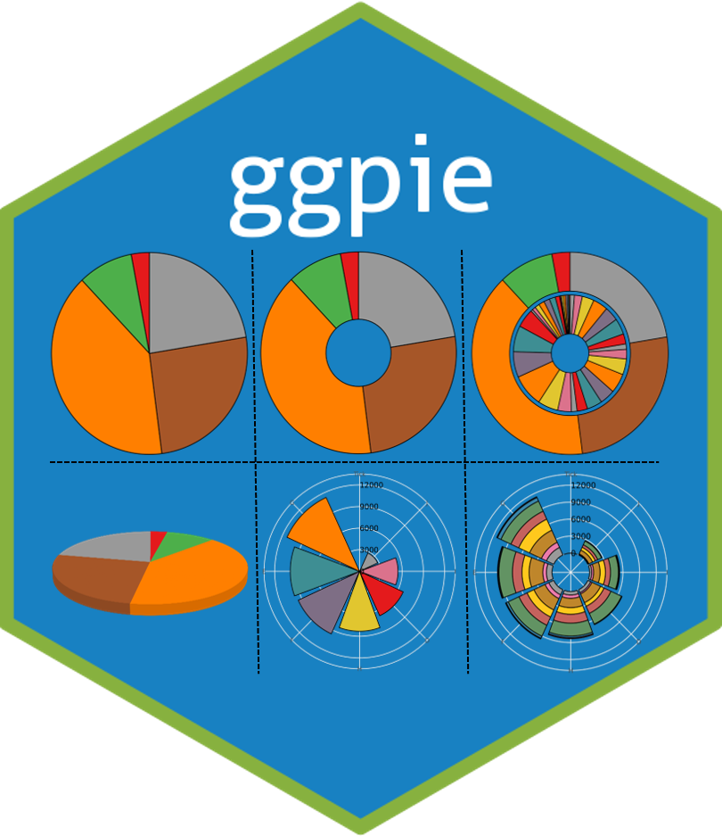
Introduction
ggpie aims to create pie (2D and 3D), donut and rose pie plot with the ggplot2 plotting system which implemented the grammar of graphics. It contains five main functions:
-
ggpie: Create 2D pie plot with single group variable. -
ggdonut: Create 2D donut plot with single group variable. -
ggnestedpie: Create 2D nested pie plot with two group variables. -
ggpie3D: Create 3D pie plot with single group variable. -
ggrosepie: Create rose pie plot with single or two group variables.
Installation
You can install the released version of ggpie from CRAN with:
install.packages("ggpie")
Or install the package via the Github repository:
# install.package("remotes") #In case you have not installed it. remotes::install_github("showteeth/ggpie")
Citation
citation("ggpie") #> #> To cite ggpie in publications use: #> #> Yabing Song (2022). ggpie: Create Pie, Donut and Rose Pie Plot with #> 'ggplot2'. R package version 0.2.2. #> https://CRAN.R-project.org/package=ggpie #> #> A BibTeX entry for LaTeX users is #> #> @Manual{, #> title = {ggpie: Create Pie, Donut and Rose Pie Plot with 'ggplot2'.}, #> author = {Yabing Song}, #> note = {R package version 0.2.2}, #> year = {2022}, #> url = {https://CRAN.R-project.org/package=ggpie}, #> }
Usage
Preapre data
library(ggpie) library(ggplot2) data(diamonds) # check data used str(diamonds) #> tibble[,10] [53,940 × 10] (S3: tbl_df/tbl/data.frame) #> $ carat : num [1:53940] 0.23 0.21 0.23 0.29 0.31 0.24 0.24 0.26 0.22 0.23 ... #> $ cut : Ord.factor w/ 5 levels "Fair"<"Good"<..: 5 4 2 4 2 3 3 3 1 3 ... #> $ color : Ord.factor w/ 7 levels "D"<"E"<"F"<"G"<..: 2 2 2 6 7 7 6 5 2 5 ... #> $ clarity: Ord.factor w/ 8 levels "I1"<"SI2"<"SI1"<..: 2 3 5 4 2 6 7 3 4 5 ... #> $ depth : num [1:53940] 61.5 59.8 56.9 62.4 63.3 62.8 62.3 61.9 65.1 59.4 ... #> $ table : num [1:53940] 55 61 65 58 58 57 57 55 61 61 ... #> $ price : int [1:53940] 326 326 327 334 335 336 336 337 337 338 ... #> $ x : num [1:53940] 3.95 3.89 4.05 4.2 4.34 3.94 3.95 4.07 3.87 4 ... #> $ y : num [1:53940] 3.98 3.84 4.07 4.23 4.35 3.96 3.98 4.11 3.78 4.05 ... #> $ z : num [1:53940] 2.43 2.31 2.31 2.63 2.75 2.48 2.47 2.53 2.49 2.39 ...
Pie plot
no label
Pie plot with no label:
# with no label ggpie(data = diamonds, group_key = "cut", count_type = "full",label_type = "none")

circle label
circle label and out of pie:
ggpie(data = diamonds, group_key = "cut", count_type = "full", label_info = "all", label_type = "circle", label_size = 4, label_pos = "out")
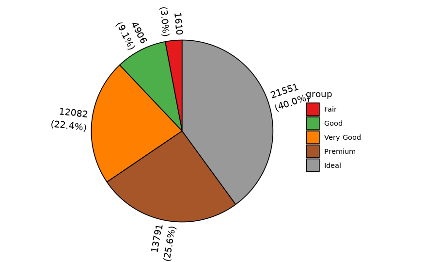
circle label and in pie plot, with no split:
ggpie(data = diamonds, group_key = "cut", count_type = "full", label_info = "all", label_type = "circle", label_split = NULL, label_size = 4, label_pos = "in")
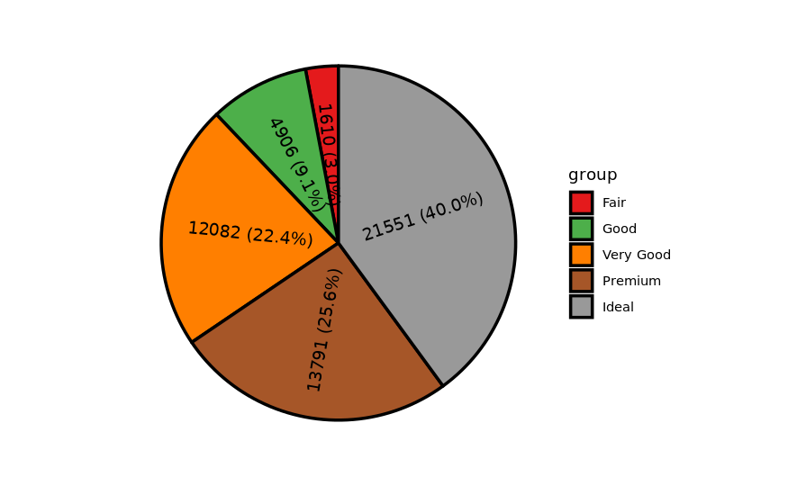
horizon label
horizon label and in pie plot, with no split:
ggpie(data = diamonds, group_key = "cut", count_type = "full", label_info = "all", label_type = "horizon", label_split = NULL, label_size = 4, label_pos = "in")
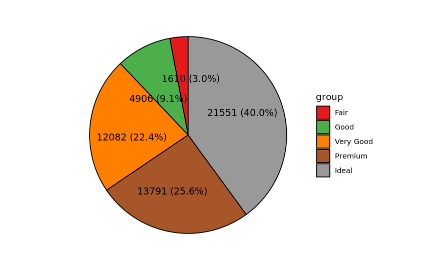
horizon label and in pie plot, split with space:
ggpie(data = diamonds, group_key = "cut", count_type = "full", label_info = "all", label_type = "horizon", label_size = 4, label_pos = "in")
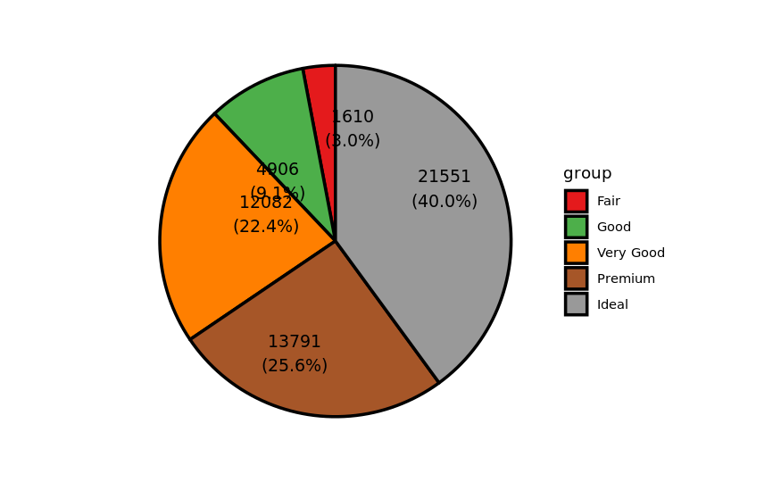
horizon label and out pie plot, with no split:
ggpie(data = diamonds, group_key = "cut", count_type = "full", label_info = "all", label_type = "horizon", label_size = 4, label_pos = "out" )
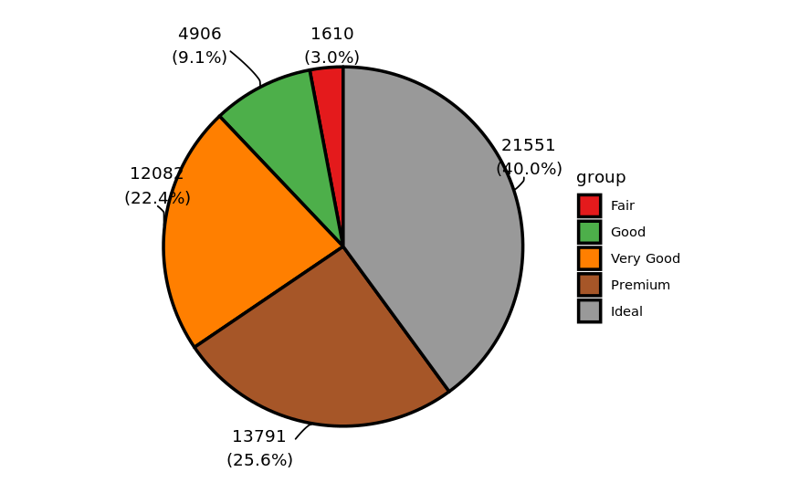
adjust threashold
With label_threshold, ggpie will move label below label_threshold to out of pie. In this example, all labels below 10% are moved to out of pie:
ggpie(data = diamonds, group_key = "cut", count_type = "full", label_info = "all", label_type = "horizon", label_split = NULL, label_size = 4, label_pos = "in", label_threshold = 10)
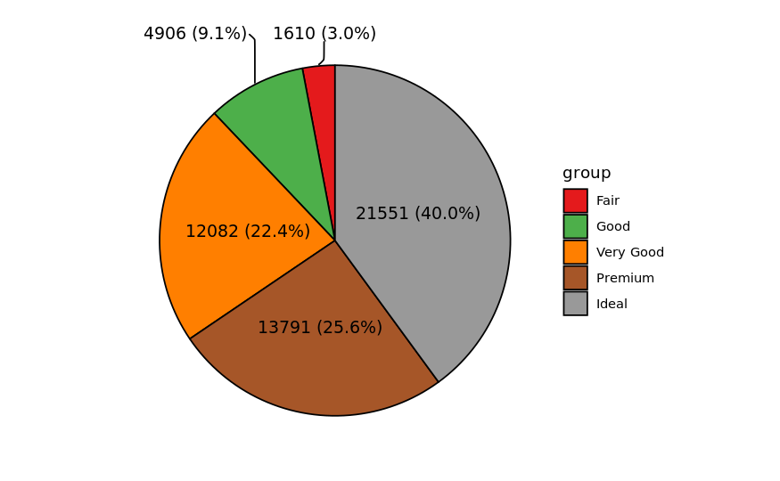
Donut plot
no label
# with no label ggdonut(data = diamonds, group_key = "cut", count_type = "full",label_type = "none")
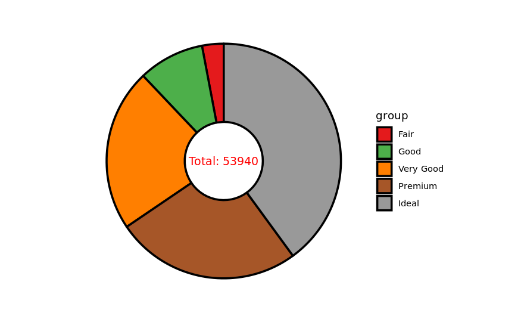
circle label
circle label and out of pie:
ggdonut(data = diamonds, group_key = "cut", count_type = "full", label_info = "all", label_type = "circle", label_size = 4, label_pos = "out")
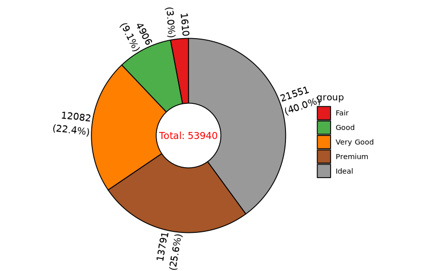
circle label and in pie plot, with no split:
ggdonut(data = diamonds, group_key = "cut", count_type = "full", label_info = "all", label_type = "circle", label_split = NULL, label_size = 4, label_pos = "in")
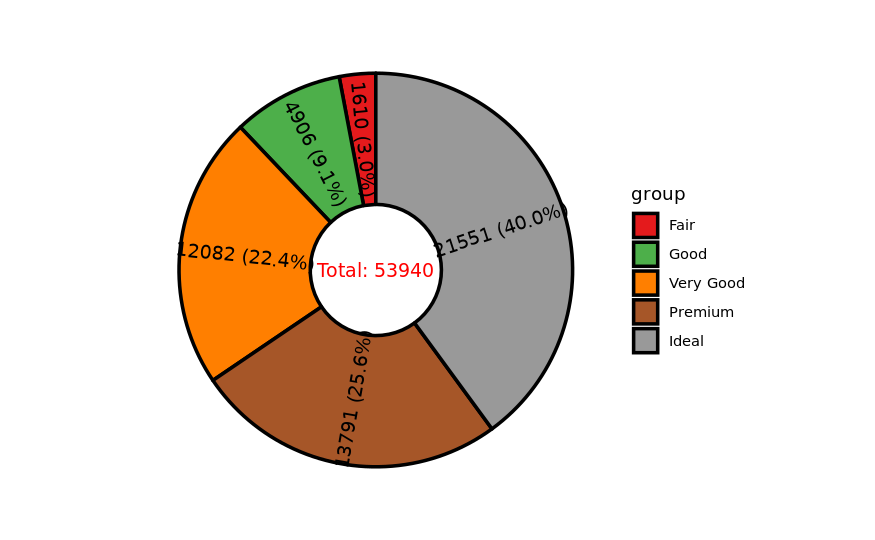
horizon label
horizon label and in pie plot, with no split:
ggdonut(data = diamonds, group_key = "cut", count_type = "full", label_info = "all", label_type = "horizon", label_split = NULL, label_size = 4, label_pos = "in")
horizon label and in pie plot:
ggdonut(data = diamonds, group_key = "cut", count_type = "full", label_info = "all", label_type = "horizon", label_size = 4, label_pos = "in")
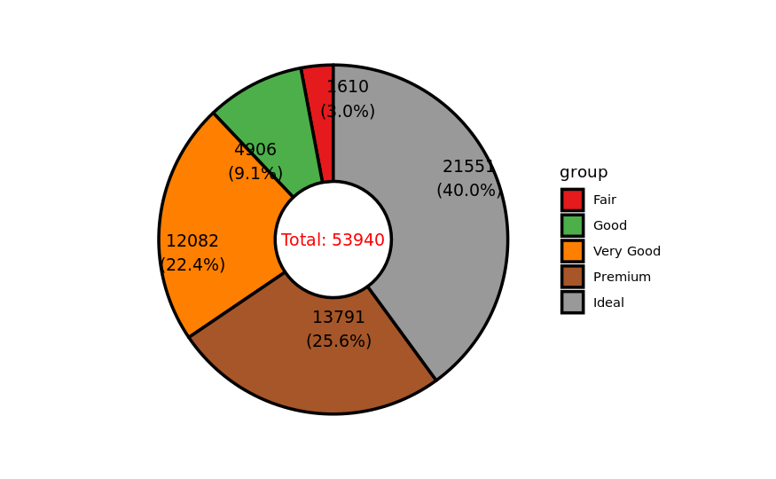
horizon label and out of pie plot, with no split:
ggdonut(data = diamonds, group_key = "cut", count_type = "full", label_info = "all", label_type = "horizon", label_split = NULL, label_size = 4, label_pos = "out")
horizon label and out of pie plot:
ggdonut(data = diamonds, group_key = "cut", count_type = "full", label_info = "all", label_type = "horizon", label_size = 4, label_pos = "out")
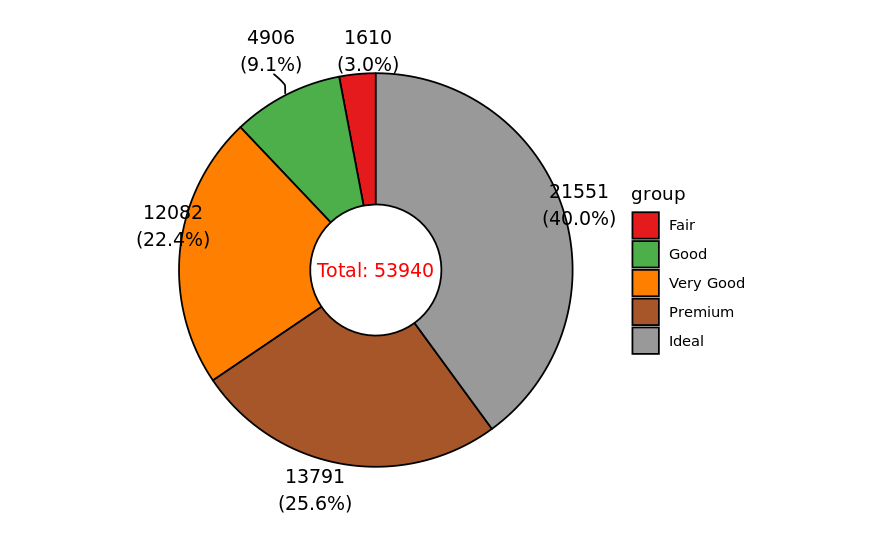
adjust threashold
With label_threshold, ggpie will move label below label_threshold to out of donut. In this example, all labels below 10% are moved to out of donut:
ggdonut(data = diamonds, group_key = "cut", count_type = "full", label_info = "all", label_type = "horizon", label_split = NULL, label_size = 4, label_pos = "in", label_threshold = 10)
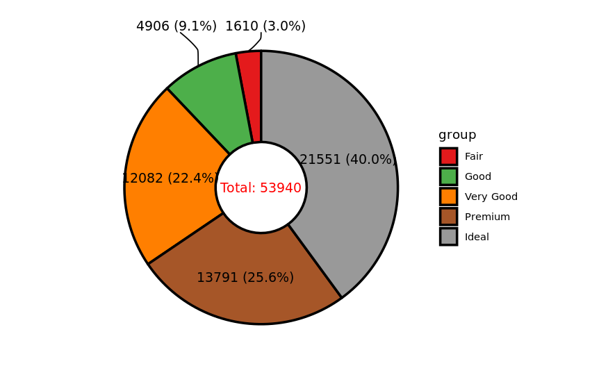
ggdonut(data = diamonds, group_key = "cut", count_type = "full", label_info = "all", label_type = "horizon", label_size = 4, label_pos = "in", label_threshold = 10)
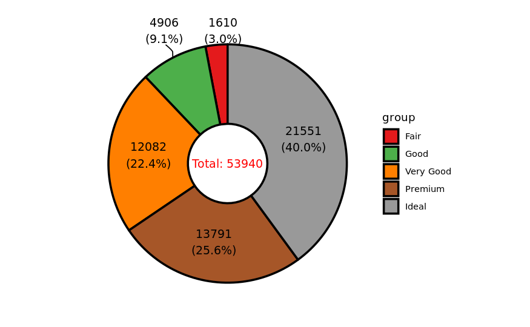
3D pie plot
p1= ggpie3D(data = diamonds, group_key = "cut", count_type = "full", tilt_degrees = -10, label_size=2) + ggtitle("tilt_degrees = -10") + theme(plot.title = element_text(hjust = 0.5)) p2= ggpie3D(data = diamonds, group_key = "cut", count_type = "full", tilt_degrees = -40, label_size=2) + ggtitle("tilt_degrees = -40") + theme(plot.title = element_text(hjust = 0.5)) p3= ggpie3D(data = diamonds, group_key = "cut", count_type = "full", tilt_degrees = -10, start_degrees = 60, label_size=2) + ggtitle("start_degrees = 60") + theme(plot.title = element_text(hjust = 0.5)) p4= ggpie3D(data = diamonds, group_key = "cut", count_type = "full", tilt_degrees = -10, start_degrees = 180, label_size=2) + ggtitle("start_degrees = 180") + theme(plot.title = element_text(hjust = 0.5)) cowplot::plot_grid(p1,p2,p3,p4,ncol = 2)
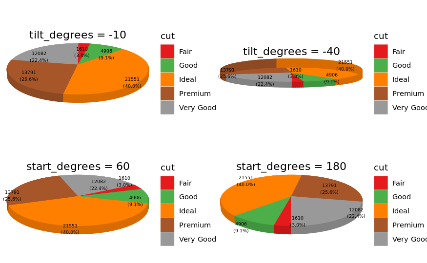
Nested pie/donut plot
It is often the case that we have two categorical variables and then need to plot for both of them, ggnestedpie is designed to deal with this.
inner circle and outer circle
inner circle label and no split, outer circle label and in pie plot
ggnestedpie(data = diamonds, group_key = c("cut", "color"), count_type = "full", inner_label_info = "all", inner_label_split = NULL,inner_label_size = 2, outer_label_type = "circle", outer_label_pos = "in", outer_label_info = "all") #> Coordinate system already present. Adding new coordinate system, which will replace the existing one.
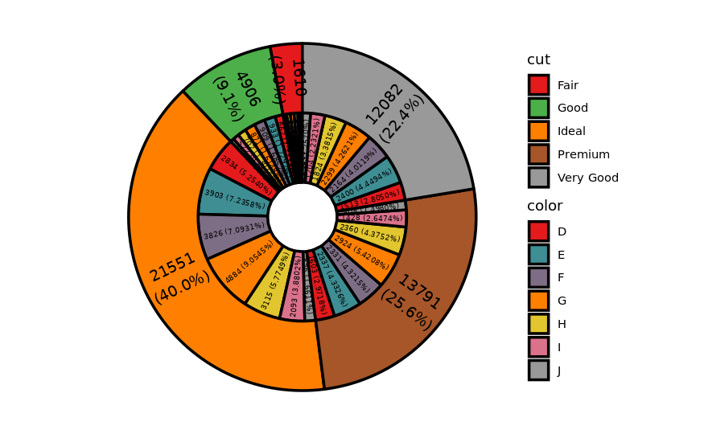
inner circle label and no split, outer circle label and in pie plot, remove fraction below 1 of inner pie:
ggnestedpie(data = diamonds, group_key = c("cut", "color"), count_type = "full", inner_label_info = "all", inner_label_split = NULL, inner_label_threshold = 5, inner_label_size = 2, outer_label_type = "circle", outer_label_pos = "in", outer_label_info = "all") #> Coordinate system already present. Adding new coordinate system, which will replace the existing one.
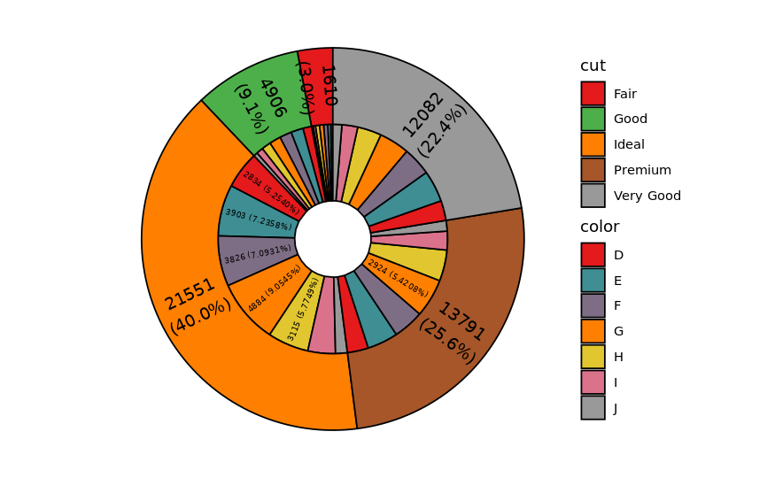
inner circle label and no split, outer circle label and out of pie plot:
ggnestedpie(data = diamonds, group_key = c("cut", "color"), count_type = "full", inner_label_info = "all", inner_label_split = NULL, inner_label_size = 2, outer_label_type = "circle", outer_label_pos = "out", outer_label_info = "all") #> Coordinate system already present. Adding new coordinate system, which will replace the existing one.
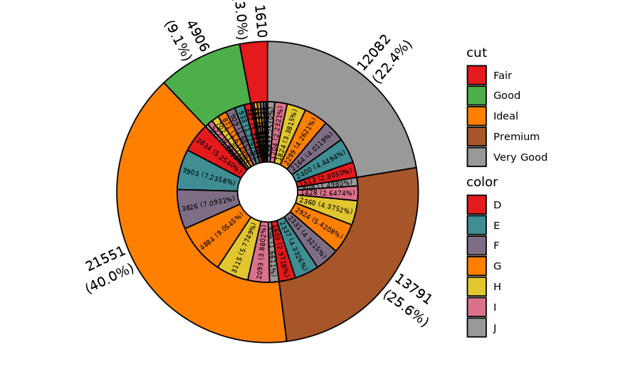
inner circle and outer horizon
inner circle label and no split, outer horizon label and out of pie plot, remove fraction below 1 of inner pie:
ggnestedpie(data = diamonds, group_key = c("cut", "color"), count_type = "full", inner_label_info = "all", inner_label_split = NULL, inner_label_threshold = 1, inner_label_size = 2, outer_label_type = "horizon", outer_label_pos = "out", outer_label_info = "all") #> Coordinate system already present. Adding new coordinate system, which will replace the existing one.
inner circle label and no split, outer horizon label and in pie plot, remove fraction below 1 of inner pie, adjust fraction below 10 to out of pie of outer pie plot:
ggnestedpie(data = diamonds, group_key = c("cut", "color"), count_type = "full", inner_label_info = "all", inner_label_split = NULL, inner_label_threshold = 1, inner_label_size = 2, outer_label_type = "horizon", outer_label_pos = "in", outer_label_info = "all", outer_label_threshold = 10) #> Coordinate system already present. Adding new coordinate system, which will replace the existing one.
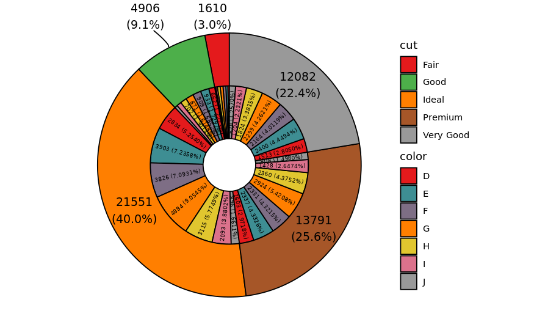
blank between plot
ggnestedpie(data = diamonds, group_key = c("cut", "color"), count_type = "full", r0 = 0.5, r1 = 1.5, r2 = 2.6,inner_label_info = "all", inner_label_split = NULL, inner_label_threshold = 1, inner_label_size = 2, outer_label_type = "horizon", outer_label_pos = "in", outer_label_info = "all", outer_label_threshold = 10) #> Coordinate system already present. Adding new coordinate system, which will replace the existing one.
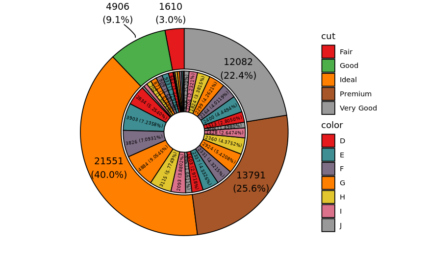
Rose pie/donut plot
single variable
do not show tick:
# pie plot p1=ggrosepie(diamonds, group_key = "color", count_type = "full", label_info = "all", show_tick=F,donut_frac=NULL) # donut plot p2=ggrosepie(diamonds, group_key = "color", count_type = "full", label_info = "all", show_tick=F,donut_frac=0.3,donut_label_size=3) cowplot::plot_grid(p1,p2)
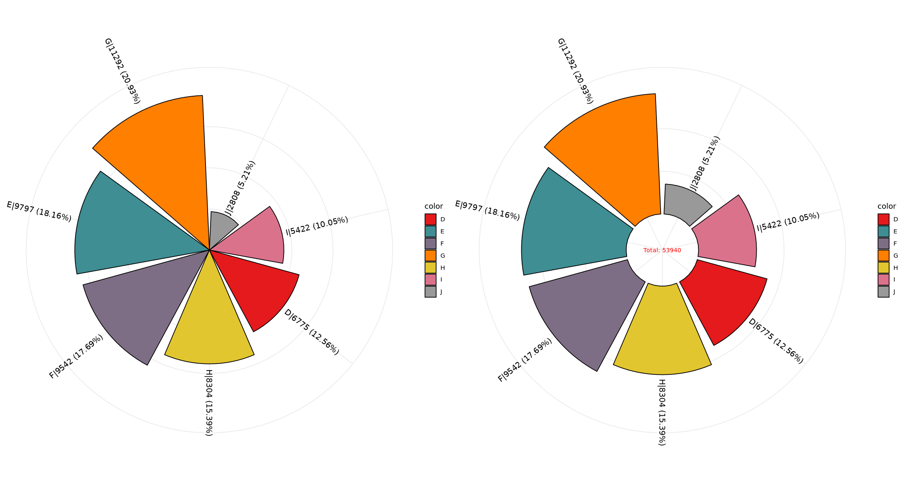
show tick and select breaks automaticly:
# pie plot p1=ggrosepie(diamonds, group_key = "color", count_type = "full", label_info = "all", donut_frac=NULL) # donut plot p2=ggrosepie(diamonds, group_key = "color", count_type = "full", label_info = "all", donut_frac=0.3,donut_label_size=3) cowplot::plot_grid(p1,p2)
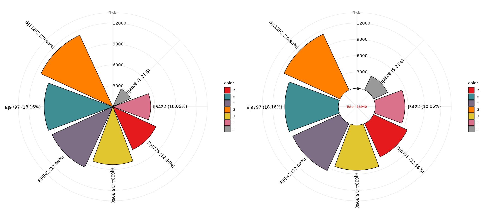
show tick and with specific breaks:
# pie plot p1=ggrosepie(diamonds, group_key = "color", count_type = "full", label_info = "all", tick_break = c(3000,5000,7000,11000), donut_frac=NULL) # donut plot p2=ggrosepie(diamonds, group_key = "color", count_type = "full", label_info = "all", tick_break = c(3000,5000,7000,11000), donut_frac=0.3,donut_label_size=3) cowplot::plot_grid(p1,p2)
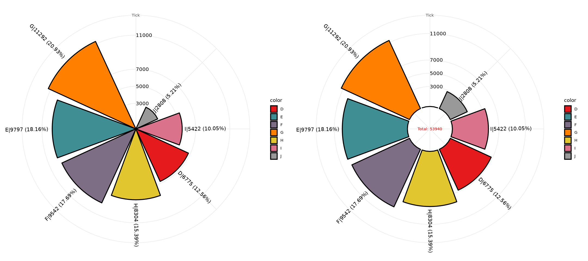
two variables
do not show tick:
# pie plot p1=ggrosepie(diamonds, group_key = c("color","clarity"), count_type = "full", label_info = "all", show_tick=F,donut_frac=NULL) # donut plot p2=ggrosepie(diamonds, group_key = c("color","clarity"), count_type = "full", label_info = "all", show_tick=F,donut_frac=0.3,donut_label_size=3) cowplot::plot_grid(p1,p2)
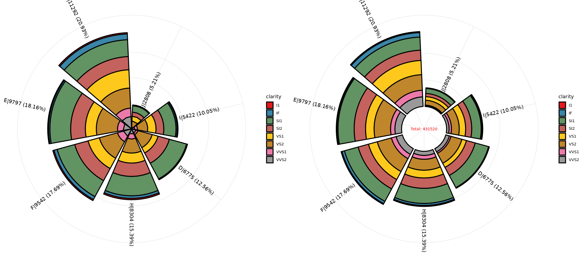
show tick and select breaks automaticly:
# pie plot p1=ggrosepie(diamonds, group_key = c("color","clarity"), count_type = "full", label_info = "all", donut_frac=NULL) # donut plot p2=ggrosepie(diamonds, group_key = c("color","clarity"), count_type = "full", label_info = "all", donut_frac=0.3,donut_label_size=3) cowplot::plot_grid(p1,p2)
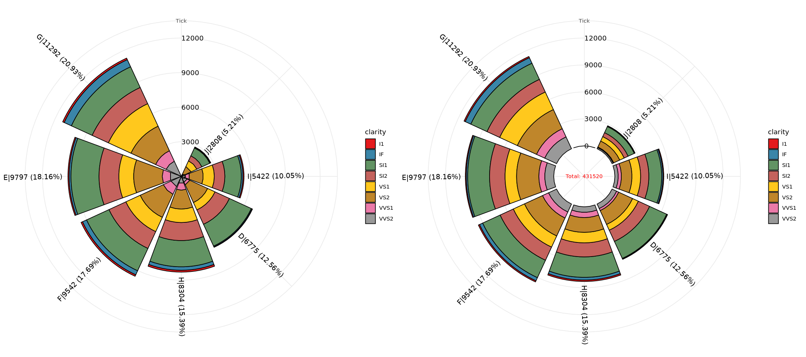
show tick and with specific breaks:
# pie plot p1=ggrosepie(diamonds, group_key = c("color","clarity"), count_type = "full", label_info = "all", tick_break = c(3000,5000,7000,11000), donut_frac=NULL) # donut plot p2=ggrosepie(diamonds, group_key = c("color","clarity"), count_type = "full", label_info = "all", tick_break = c(3000,5000,7000,11000), donut_frac=0.3,donut_label_size=3) cowplot::plot_grid(p1,p2)
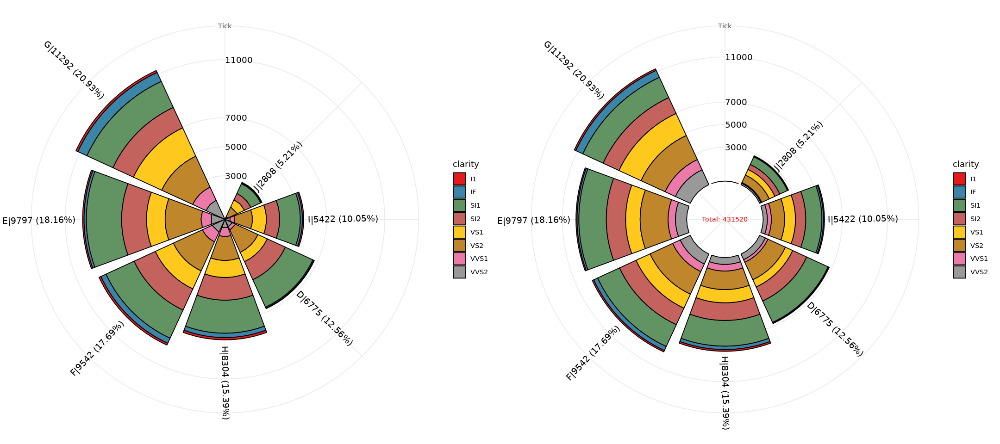
Contributing
Please note that the ggpie project is released with a Contributor Code of Conduct. By contributing to this project, you agree to abide by its terms.